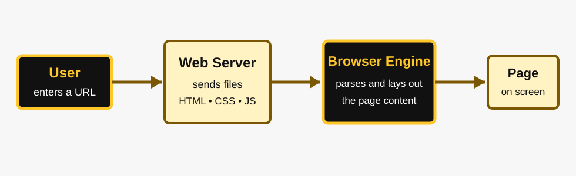
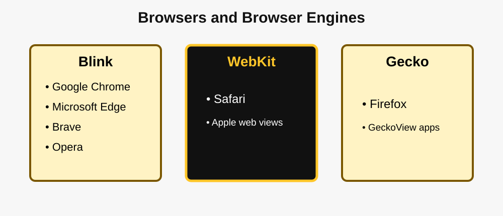

Main Research Page 2
How Browser Engines Work
A browser engine connects web code to the visual and interactive page. It coordinates several systems rather than performing only one simple task.

A simplified rendering process
- Request: The browser requests a resource from a web server, usually using HTTPS.
- Download: The server returns HTML and may also provide CSS, JavaScript, images, fonts, and media.
- Parse: The browser builds structures representing the HTML document and CSS rules.
- Layout: The engine calculates the size and position of visible elements.
- Paint: Text, colors, borders, and images are drawn to the screen.
- Update: JavaScript and user actions can change the document, causing parts of the page to be recalculated and redrawn.

The three major engines
Blink
Blink is the rendering engine used by Chromium. Chrome, Edge, Brave, Opera, and other Chromium-based browsers use it. Blink has a large influence because Chromium-based browsers have a large combined market share.
WebKit
WebKit is an open-source web content engine used by Safari and many applications on Apple platforms. The project emphasizes compatibility, standards, performance, battery life, security, and privacy.
Gecko
Gecko is Mozilla's rendering engine and powers Firefox. It includes HTML parsing and rendering, networking, JavaScript integration, the DOM, graphics, and other browser systems.
Rendering engine versus JavaScript engine
These terms are related but not identical. A rendering engine handles document layout and painting. A JavaScript engine executes JavaScript code. Chrome and Chromium use V8 for JavaScript, Safari uses JavaScriptCore, and Firefox uses SpiderMonkey. The systems work together when a script changes the page.
| Engine | Main browser examples | Project or organization | Important role |
|---|---|---|---|
| Blink | Chrome, Edge, Brave, Opera | Chromium project | Widely used engine with broad platform support. |
| WebKit | Safari | WebKit open-source project / Apple contributors | Major engine on Apple devices and embedded applications. |
| Gecko | Firefox | Mozilla | Independent open-source implementation that supports engine diversity. |